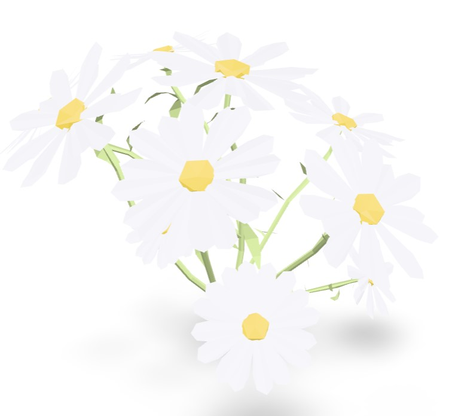
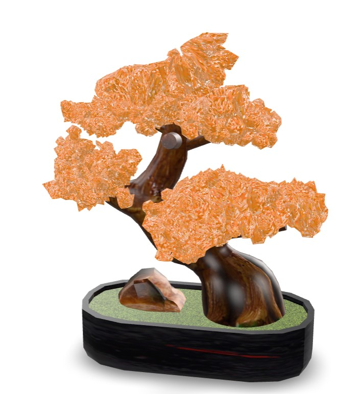
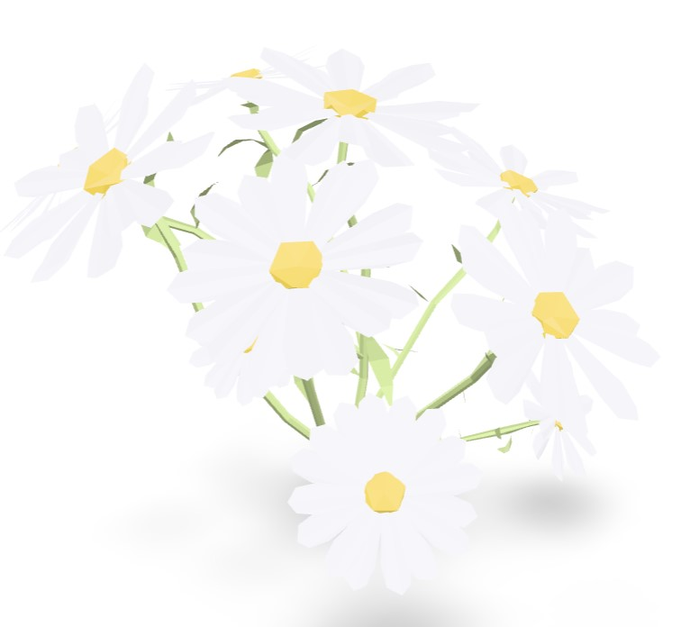
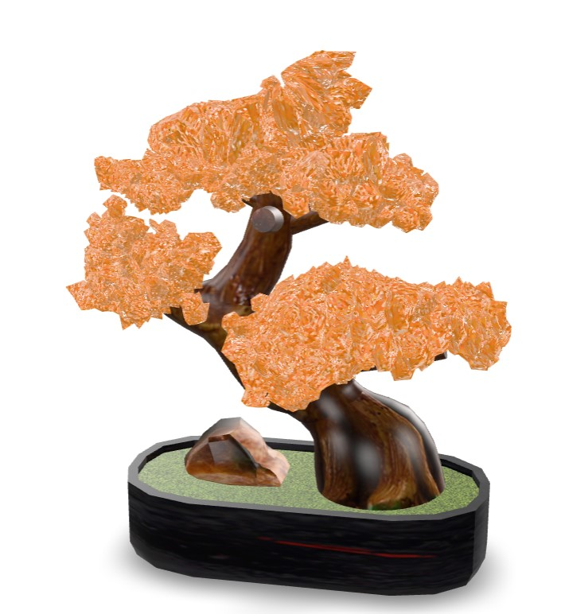
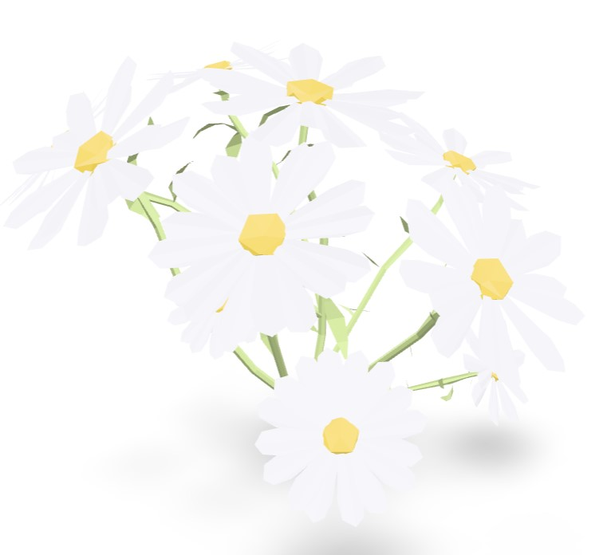
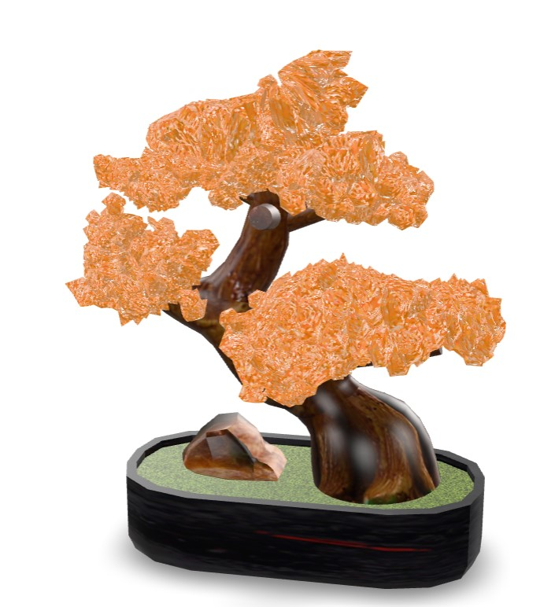
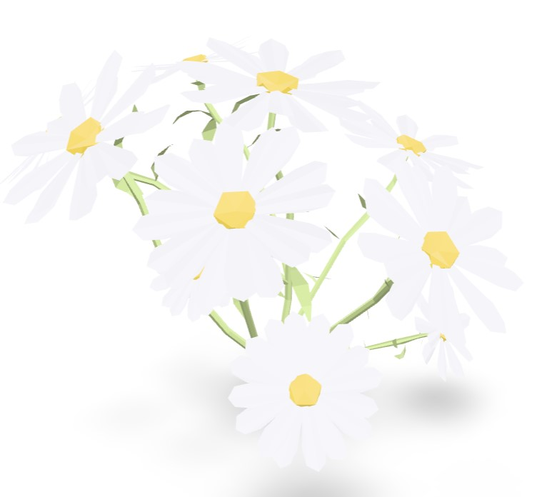
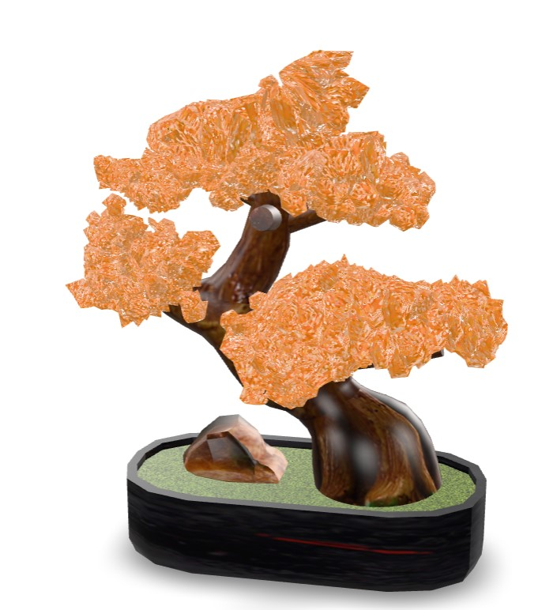
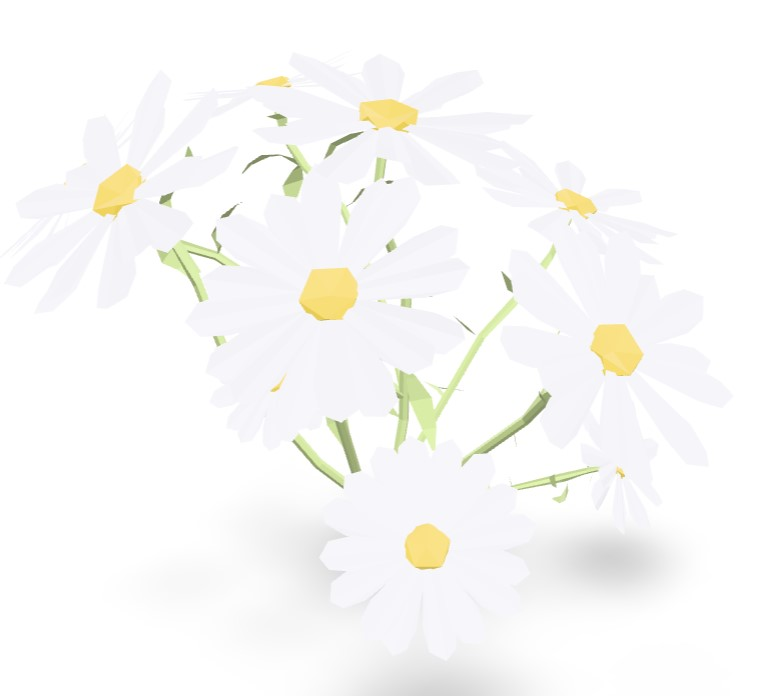
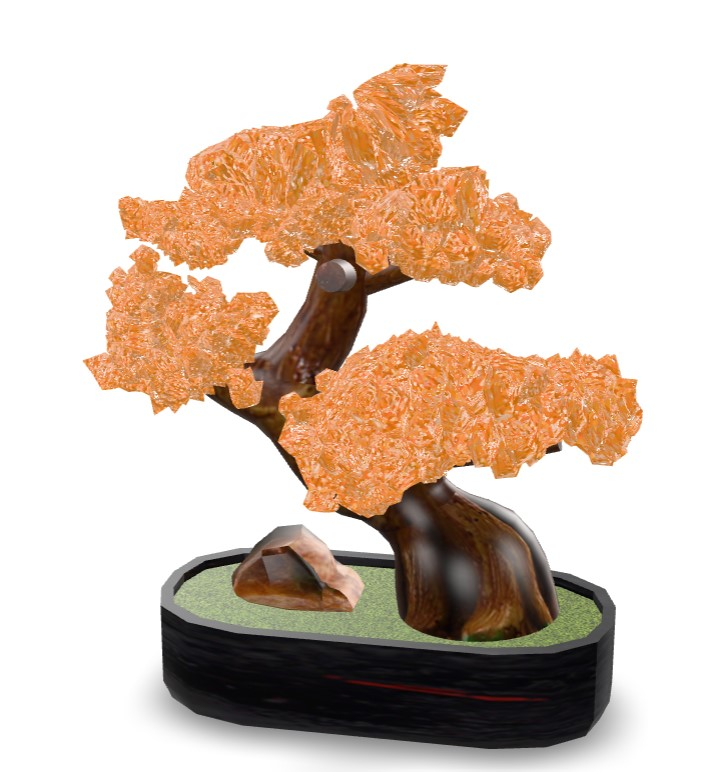

🌿 Discover Flora & Fauna of Bukit Kiara
Colored Flower
A beautiful flower with vibrant petals. Perfect for showcasing natural beauty in AR!
English
日本語
🎯 Use Marker AR
📷 Scan for AR
 
 




 


